-------------------------------강력 스포 ---------------------------------
2015년에 나온 공포게임 'SOMA' (암네시아 제작사 작품)의 엔딩 내용이니 주의바람
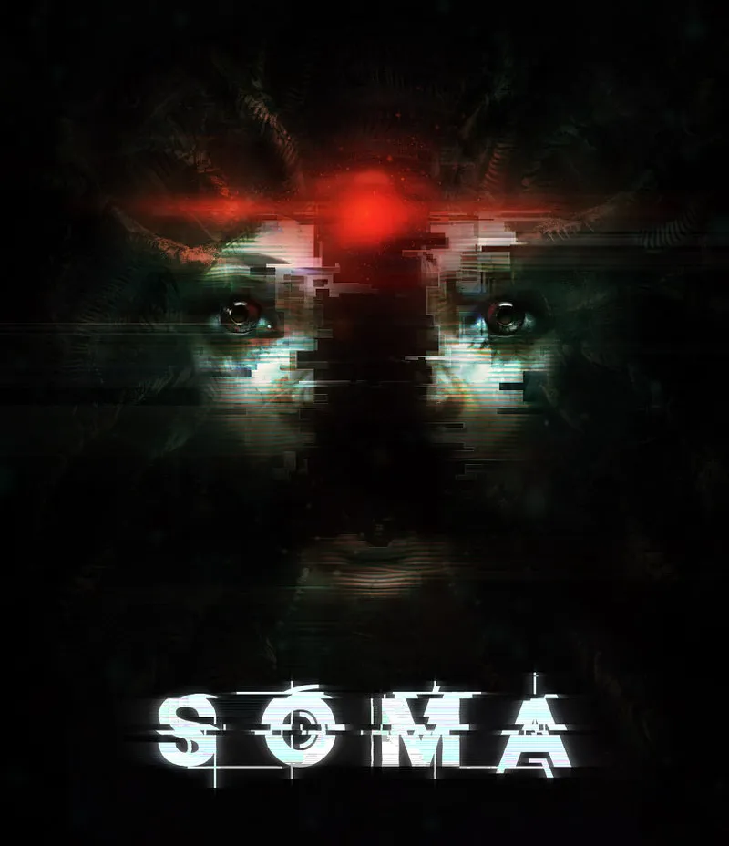
많고 많은 과정을 겪고, 결국 우리의 주인공은 '두번째' 복제를 겪고난후, 마지막으로 '세번째'로
자신을 복제해서 데이터화 해서, 우주선으로 지구밖으로 날리려고 한다. 그외에는
이 지옥같은 지구에서 더이상 인간이 남아있었다는 흔적도 사라질태고, 적어도 '인간'이라는 존재가 있었다는걸
우주에나마 떠돌아 다니게 하기위해.
주인공 사이먼이 고생끝에 의식단말을 쪼매만한 기계에 옮겨서 '존재하는' 캐서린과
바다속 시설에서 인간을 우주로 쏠려고 한다. 인간을 데이터화 해서.
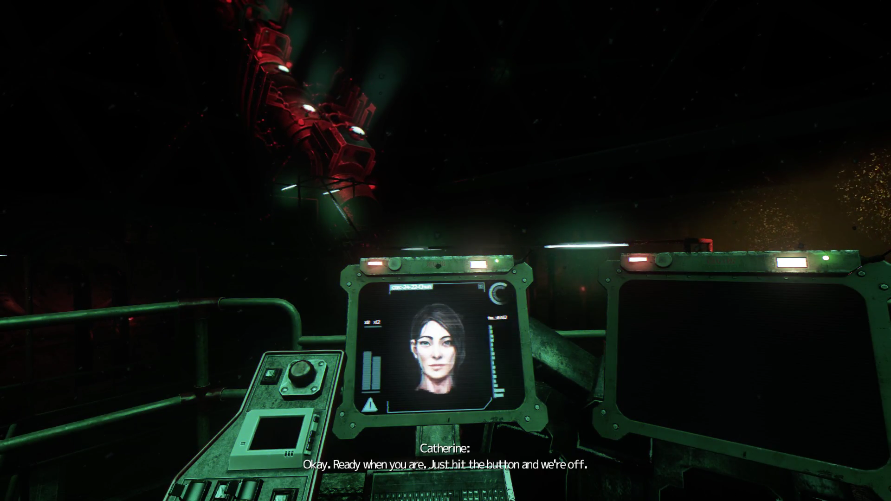
캐서린 : 좋아. 준비되면 버튼눌러. 발사준비가 되면서 동시에 우리의 의식이 우주선으로 '옮겨'질꺼야.
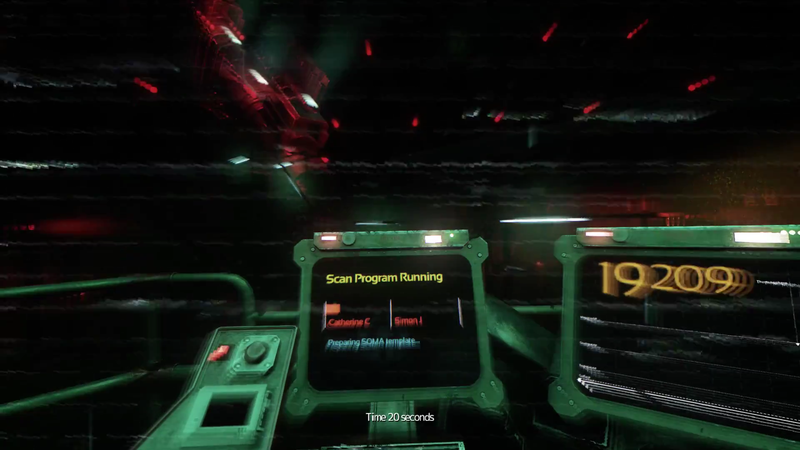
발사까지 20초.
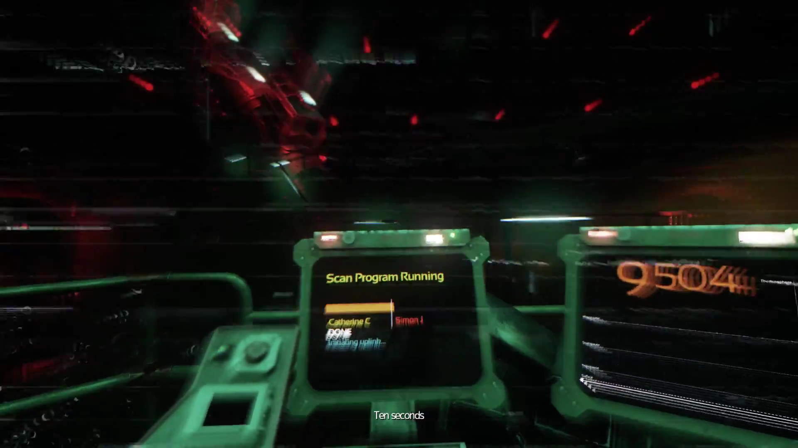
발사까지 10초. 캐서린의 '존재'는 우주선으로 옮겨졌지만, 사이먼의 '존재'는 아직 안 옮겨짐
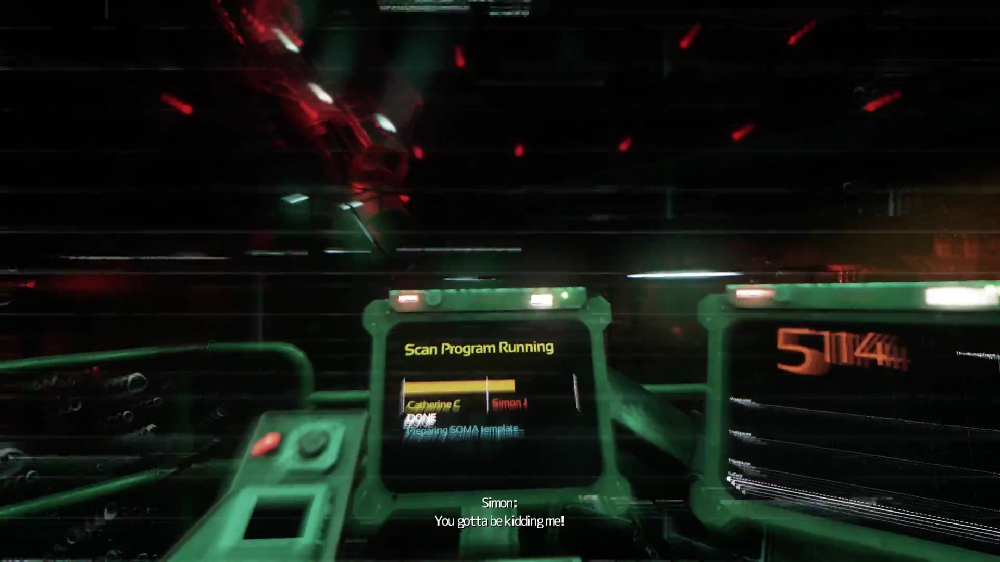
사이먼 : 지랄하지 말고!
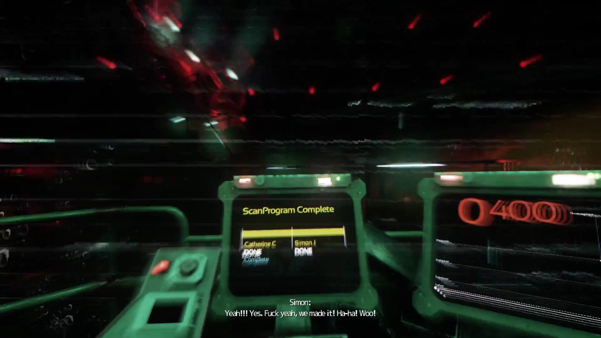
간신히 우주선이 발사되기 직전에서 자신의 '존재'가 옮겨지는 사이먼.
사이먼 : 오예! ㅆㅂ 우리가 해냈다! 드디어!
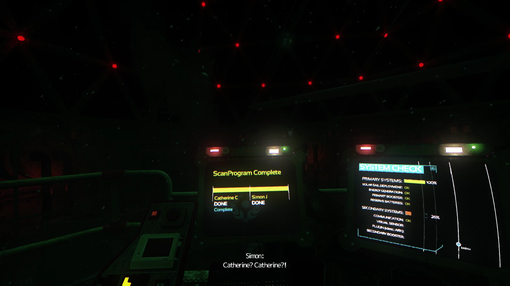
해냈다는 기쁨도 잠시, 사이먼은 우주선은 발사되었는대 막상 자신은 아직 칠흑같은
바다속의 우주선 발사시설에 그대로 있다는걸 눈치챈다. '??? 뭐야? 옮겨진다는거 아니였어?'
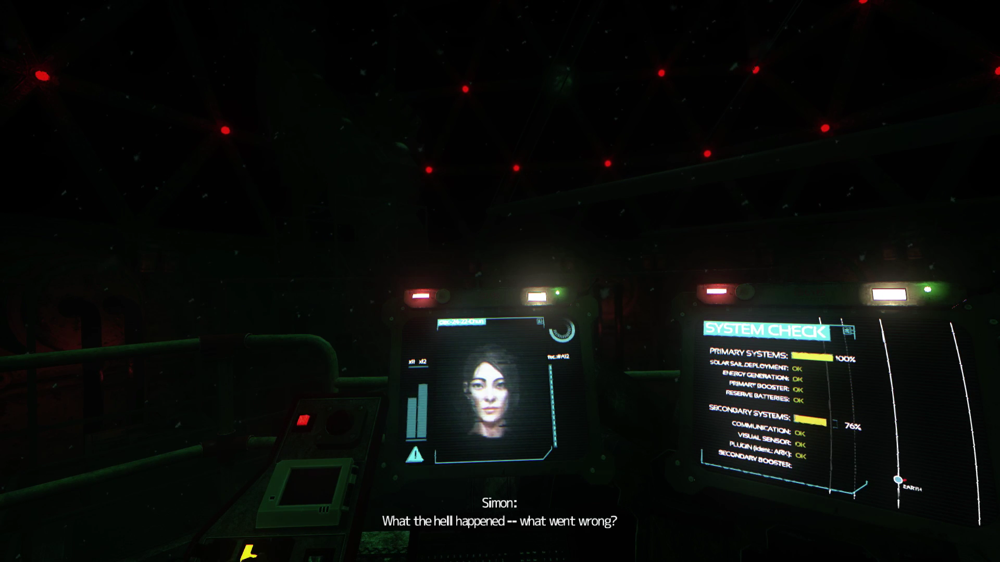
사이먼 : 뭐가 어떻게 잘못된거야? 뭔대 이거?
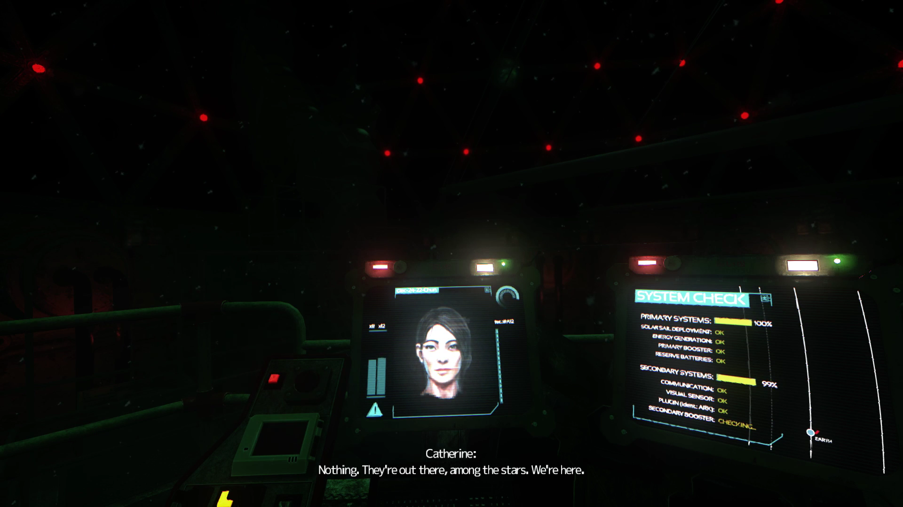
캐서린 : 아무것도, '그들'은 저기로 갔어. 별들사이로 말이야. '우리'들은 여기있고.
캐서린은 처음부터 알고있었다. 옮겨진다는건 자신들이 말그대로 통쨰로 옮겨지는게 아니라,
자신들의 '복사품'이 옮겨진다는걸.
사이먼 : 그럼 왜 우리는 아직 여기있는건대?
사이먼은 예전의 복제된 자신처럼, 이번에도 자신의 표현을 빌리자면, '동전 던지기'에서 이길꺼라
생각하고, 자신도 똑같이 우주선으로 옮겨갈꺼라 생각했지만 이번엔 아니였다.
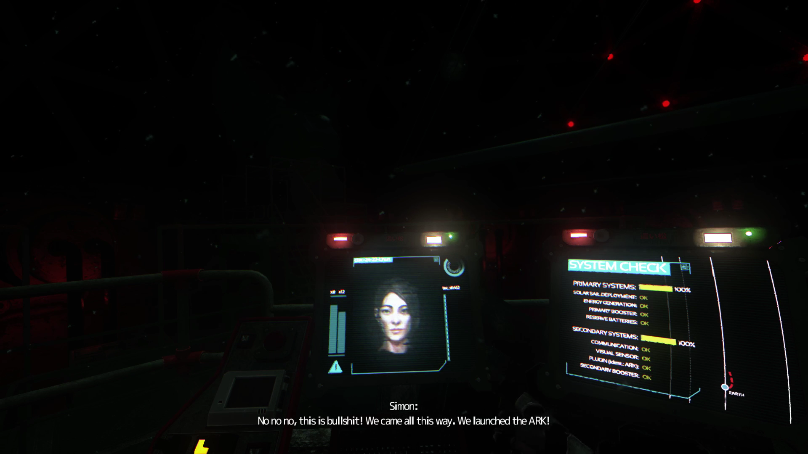
사이먼 : 아냐 아냐 아냐, 이건 좆짓거리야! 우리는 우주선에 우리를 옮겨서 발사했잖아!
사이먼 : 너 미쳤어 캐서린? 우리는 이 어두컴컴한 아래에서 죽을꺼야. 저 밖에 돌아다니는 미친 괴물새끼들하고 같이 말야. 우주선에 타고있는 '저들'은 우리가 아니야! 우리가 아니라고!
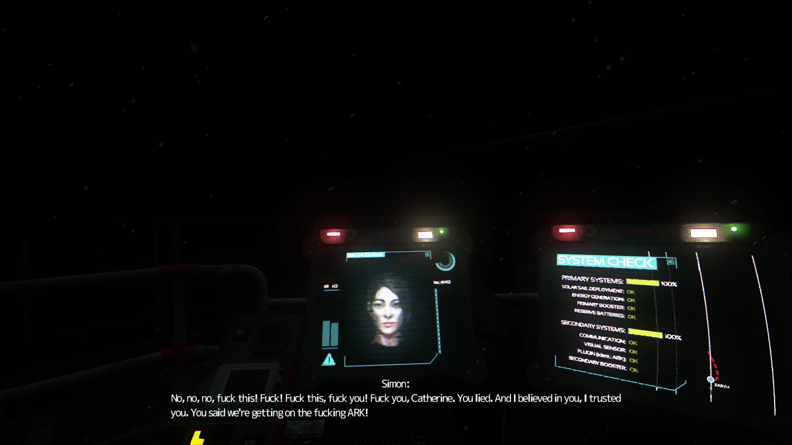
사이먼 : 아냐 아냐 아냐, 좆까 씨발년아! 좆까 캐서린! 구라나 치는 씨발년아! 난 널 믿었다고!
우리가 분명히 우주선에 옮겨질꺼라고 그랬잖아!
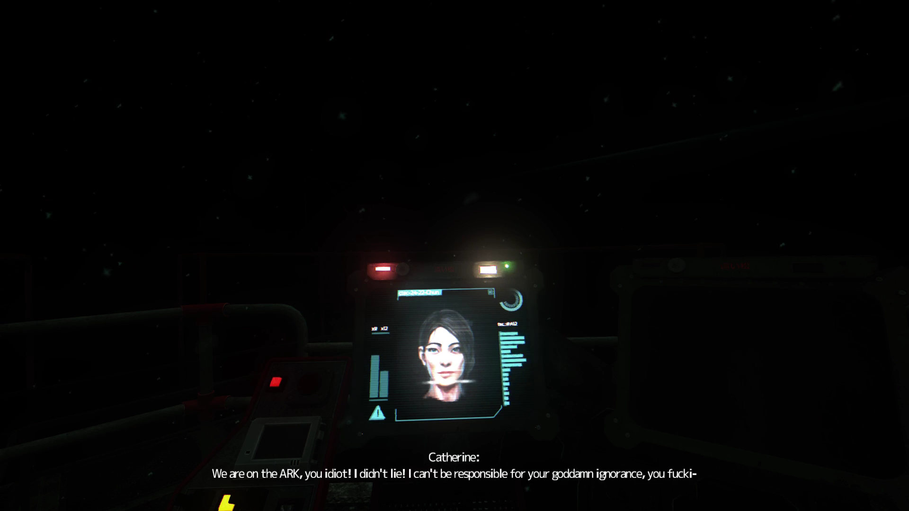
캐서린 : '우리'는 우주선에 탔어 이 등신아! 난 거짓말 안했다고! 니가 똘빡새끼인거에 내가 무슨 책임이
있는건대? 이 씨ㅂ ㅏ -
우주선 발사시설의 전원도 꺼지면서, 동시에 캐서린의 의식단말도 꺼져버린다. 그렇게 캐서린의 존재는
지구에서 사라진다.
멸망하는 지구에서 무언가 생각하고 존재를 자각할수 있는것은 시커먼 바다속에 남아있는 주인공 뿐이다.
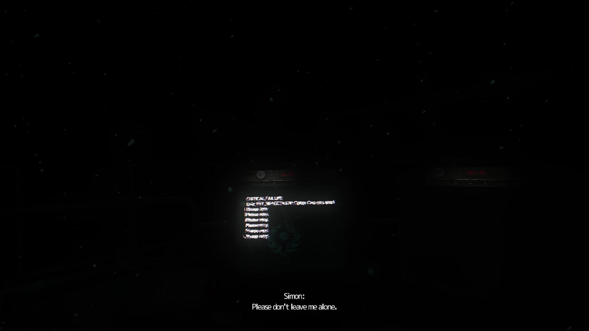
사이먼 : 씨발!!!!!!! ??? 캐서린? 캐서린? 들려? 여기에 나 혼자 두지마...
-----------------------------------------------------------------------------------------------------------------------
나는 죽게되겠지만, 내가 옮겨진 또다른'나'는 안전한 곳에서 행복하게 살게될태니 해피엔딩인가?
짱구아빠vs로봇아빠